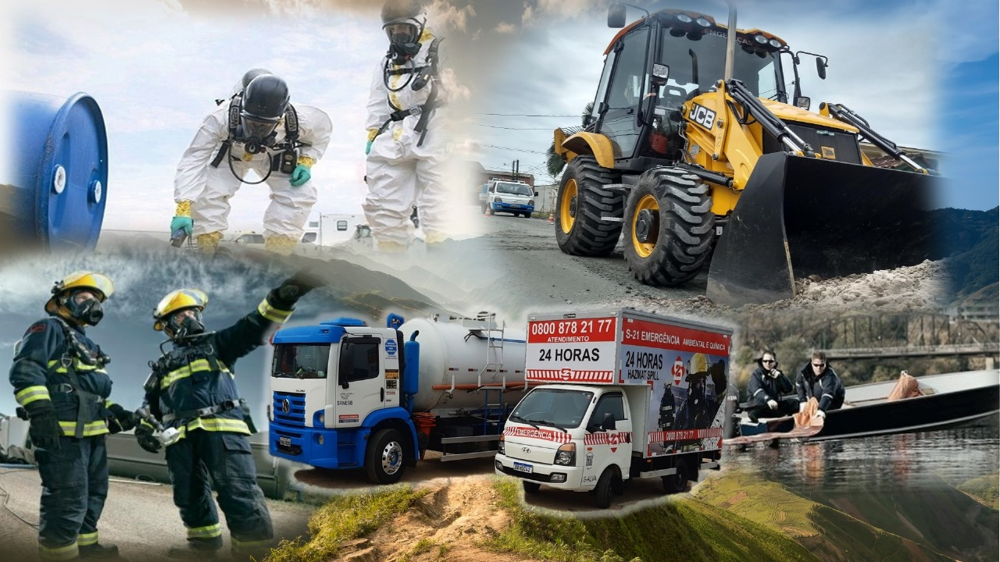
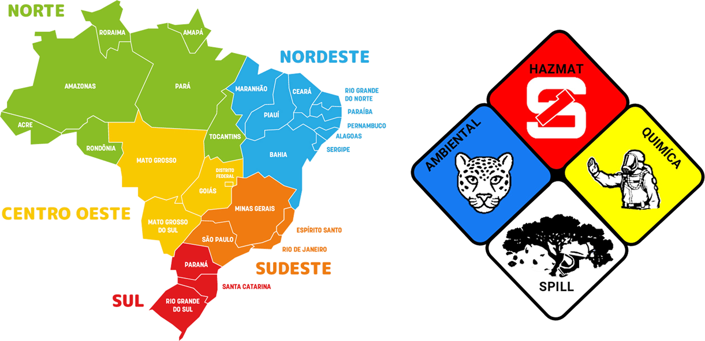

Resposta a emergências
Atendimento a acidentes rodoviários, vazamentos industriais e ocorrências com produtos perigosos.
Fale com a equipeResposta a emergências químicas e ambientais. Pessoas preparadas, estrutura e ação para proteger vidas e o meio ambiente.

 Preparação técnica.
Preparação técnica.A S21 Emergências é o braço especializado do Grupo SANESB no atendimento a emergências químicas e ambientais. Nossa trajetória remonta a 1998, com foco em segurança, resposta técnica e preservação ambiental.
Da prevenção à recuperação do cenário afetado, atuamos em acidentes e falhas operacionais que colocam em risco as pessoas e o meio ambiente.
Soluções integradas para reduzir riscos, controlar ocorrências e recuperar o ambiente.
Atendimento a acidentes rodoviários, vazamentos industriais e ocorrências com produtos perigosos.
Fale com a equipeIntervenção técnica para conter vazamentos e reduzir os impactos sobre pessoas e meio ambiente.
Fale com a equipeRecuperação de solos e áreas atingidas, com remoção e tratamento dos materiais contaminados.
Fale com a equipeColeta, transporte especializado e destinação de resíduos gerados nas operações.
Fale com a equipePlanos de Atendimento a Emergências (PAE), gerenciamento de riscos e orientação para sua operação.
Fale com a equipePreparação de equipes para uma resposta coordenada e segura em situações de emergência.
Fale com a equipeEm uma ocorrência, priorize sua segurança e informe a localização à equipe.
A partir de nossa sede em Araucária, no Paraná, coordenamos a resposta às ocorrências com uma rede de bases de emergência em território nacional.
No Sul do Brasil, atendemos demandas no Paraná, em Santa Catarina e no Rio Grande do Sul. Consulte a central para confirmar a mobilização e os recursos necessários à sua ocorrência.


Conheça nossas equipes, viaturas e registros de operações. Selecione uma foto para ampliar.
Segurança em cada etapa.
Do planejamento à resposta em campo.
Solicite informações sobre nossos serviços, planos de emergência e atendimento para sua empresa.
0800 878 21 77 ↗Central de emergência · Atendimento 24 horas